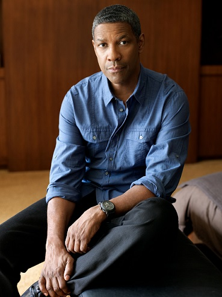
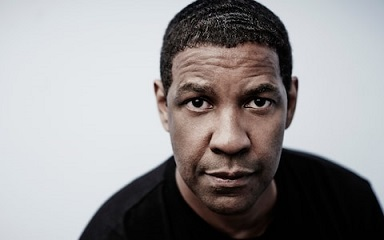
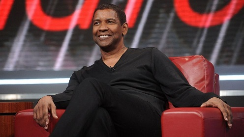
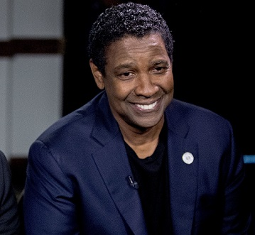

Early Work
Washington spent the summer of 1976 in St. Mary's City, Maryland, in summer stock theater performing Wings of the Morning, the Maryland State play, which was written for him by incorporating an African-American character/narrator based loosely on the historical figure from early colonial Maryland, Mathias Da Sousa. Shortly after graduating from Fordham, Washington made his screen acting debut in the 1977 made-for-television film Wilma, and his first Hollywood appearance in the 1981 film Carbon Copy. He shared a 1982 Distinguished Ensemble Performance Obie Award for playing Private First Class Melvin Peterson in the Off-Broadway Negro Ensemble Company production A Soldier's Play which premiered November 20, 1981.
Start Of His Professional Career
A major career break came when Washington starred as Dr. Phillip Chandler in NBC's television hospital drama St. Elsewhere, which ran from 1982 to 1988. He was one of only a few African-American actors to appear on the series for its entire six-year run.  He also appeared in several television, motion picture and stage roles, such as the films A Soldier's Story (1984), Hard Lessons (1986) and Power (1986). In 1987, he starred as South African anti-apartheid political activist Steven Biko in Richard Attenborough's Cry Freedom, for which he received a nomination for the Academy Award for Best Supporting Actor. In 1989, Washington won the Academy Award for Best Supporting Actor for his portrayal of a defiant, self-possessed ex-slave soldier in the film Glory. That same year, he appeared in the film The Mighty Quinn; and in For Queen and Country, where he played the conflicted and disillusioned Reuben James, a British soldier who, despite a distinguished military career, returns to a civilian life where racism and inner city life lead to vigilantism and violence.
In 1990, Washington starred as Bleek Gilliam in the Spike Lee film Mo' Better Blues. In 1991, he starred as Demetrius Williams in the romantic drama Mississippi Masala. Washington was reunited with Lee to play one of his most critically acclaimed roles, the title character of 1992's Malcolm X. His performance as the black nationalist leader earned him another nomination for the Academy Award for Best Actor. The next year, he played the lawyer of a gay man with AIDS in the 1993 film Philadelphia. During the early and mid-1990s, Washington starred in several successful thrillers, including The Pelican Brief and Crimson Tide, as well as in the movie of the Shakespearean comedy Much Ado About Nothing. In 1996, he played a U.S. Army officer who, despondent about a deadly mistake he made, investigates a female chopper commander's worthiness for the Medal of Honor in Courage Under Fire with Meg Ryan. In 1996, he appeared with Whitney Houston in the romantic comedy The Preacher's Wife. In 1998, Washington starred in Spike Lee's film He Got Game. Washington played a father serving a six-year prison term when the prison warden offers him a temporary parole to convince his top-ranked high-school basketball player son (Ray Allen) to sign with the governor's alma mater, Big State. The film was Washington's third collaboration with Lee. In 1999, Washington starred in The Hurricane, a film about boxer Rubin 'Hurricane' Carter, whose conviction for triple murder was overturned after he spent almost 20 years in prison. Washington did receive a Golden Globe Award in 2000 and a Silver Bear Award at the Berlin International Film Festival for the role.
 In 2000, Washington appeared in the Disney film Remember the Titans which grossed over $100 million in the U.S. At the 57th Golden Globe Awards, Washington won the Golden Globe Award for Best Actor – Motion Picture Drama for his work in The Hurricane. He was the first black actor to win the award since Sidney Poitier in 1963. Washington won an Academy Award for Best Actor for the 2001 cop thriller Training Day, where he played Detective Alonzo Harris, a corrupt Los Angeles cop. He was the second African-American actor to win the category after Sidney Poitier, who was presented with an Honorary Academy Award the same night. After appearing in 2002's box office success, the healthcare-themed John Q., Washington directed his first film, a well-reviewed drama called Antwone Fisher, in which he also co-starred. Between 2003 and 2004, Washington appeared in a series of thrillers that performed generally well at the box office, including Out of Time, Man on Fire, and The Manchurian Candidate. In 2006, he starred in Inside Man, a Spike Lee-directed bank heist thriller co-starring Jodie Foster and Clive Owen, released in March, and Déjà Vu. In 2007, Washington co-starred with Russell Crowe, for the second time after 1995's Virtuosity, in Ridley Scott's American Gangster. He also directed and starred in the drama The Great Debaters with Forest Whitaker. He next appeared in Tony Scott's 2009 film The Taking of Pelham 123 (a remake of the 1974 thriller of the same name), where he played New York City subway security chief Walter Garber opposite John Travolta's villain.
 In the summer of 1990, Washington appeared in the title role of the Public Theater's production of Shakespeare's Richard III. In 2005, he appeared onstage again as Marcus Brutus in a Broadway production of Julius Caesar. Despite mixed reviews, the production's limited run was a consistent sell-out. In the spring of 2010, Washington played Troy Maxson, opposite Viola Davis, in the Broadway revival of August Wilson's Fences, for which he won a Tony Award for Best Actor in a Play on June 13, 2010.
In 2012, Washington starred in Flight, for which he was nominated for an Academy Award for Best Actor. He co-starred with Ryan Reynolds in Safe House, where he prepared for his role by subjecting himself to a torture session that included waterboarding. In 2013, Washington starred in 2 Guns, alongside Mark Wahlberg. In 2014, he starred in The Equalizer, an action thriller film directed by Antoine Fuqua and written by Richard Wenk, based on the television series of same name starring Edward Woodward. He reprised his role in his first sequel, The Equalizer 2 (2018).
In 2016, Washington starred in the remake of 1960 western film of the same name, The Magnificent Seven, alongside Chris Pratt, Ethan Hawke, Vincent D'Onofrio, Lee Byung-hun, Manuel Garcia-Rulfo, Martin Sensmeier, Haley Bennett, and Peter Sarsgaard. Principal photography began on May 18, 2015, in north Baton Rouge, Louisiana. The film premiered on September 8 at the 2016 Toronto International Film Festival, and was released in the United States in conventional and IMAX theatres on September 23, 2016. In The Magnificent Seven, Washington plays Sam Chisolm ("the Bounty Hunter"), a duly sworn warrant officer from Wichita, Kansas. His character was renamed from Chris Adams (played by Yul Brynner in the original film) to Sam Chisolm.  It is Washington's first Western film. Washington did not watch Westerns growing up, as it was the end of the Western era in the movies. Moreover, he and his siblings were barred from going to the cinema by his father, a minister in a church. They grew up watching biblical films instead, like King of Kings and The Ten Commandments, although he has said that he watched portions of the shows Rawhide and Bonanza. He did not view the original film in preparation, but has watched Seven Samurai. Fuqua said that Washington, whom he had twice collaborated with, was his first choice to be cast irrespective of the role. The producers were skeptical whether he would take the job since it was a Western film, but Fuqua flew to New York City to negotiate with Washington, who accepted the offer.
In 2016, Washington directed the film Fences, co-starring Viola Davis and based on Wilson's play of the same name, with a script by Wilson. Set in 1950s Pittsburgh, Washington plays a former Negro league baseball player working as a waste collector who struggles to provide for his family and come to terms with the events of his life. The film was released on December 16, 2016, by Paramount Pictures. For his performance, Washington was nominated in the Best Actor category for a Golden Globe Award and an Academy Award. In 2017, Washington starred in the legal drama film Roman J. Israel, Esq.. His performance was praised by critics and led to nominations for a Golden Globe Award, a Screen Actors Guild Award and an Academy Award, Washington's ninth Oscar nomination overall, and his sixth for Best Actor.